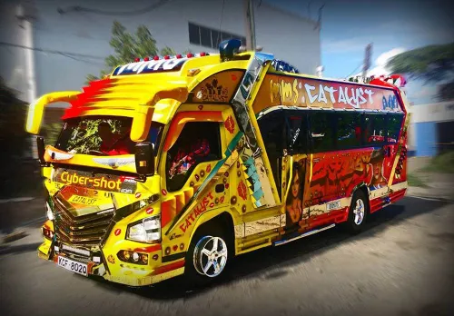

What Makes A Nganya Special?

Nganyas are famous for their unique appearance. They can have bright paint, graffiti, large speakers, colourful lights and specially designed seats.
Some nganyas are created around a particular theme. The theme may be based on music, sports, movies, popular personalities or street art.
Nganya Artwork
Artwork is one of the most noticeable features of many nganyas. Artists use the outside of the vehicle as a canvas to create attractive and creative designs.
The artwork can include drawings, words, characters and colourful patterns. This has helped make Kenyan matatus recognisable both locally and internationally.
Music And Sound
Music is another important part of nganya culture. Some nganyas have powerful sound systems that play popular music during the journey.
The combination of music, lights and artwork gives some nganyas an entertainment atmosphere in addition to their role as public transport.
VIEW MATATU ROUTES